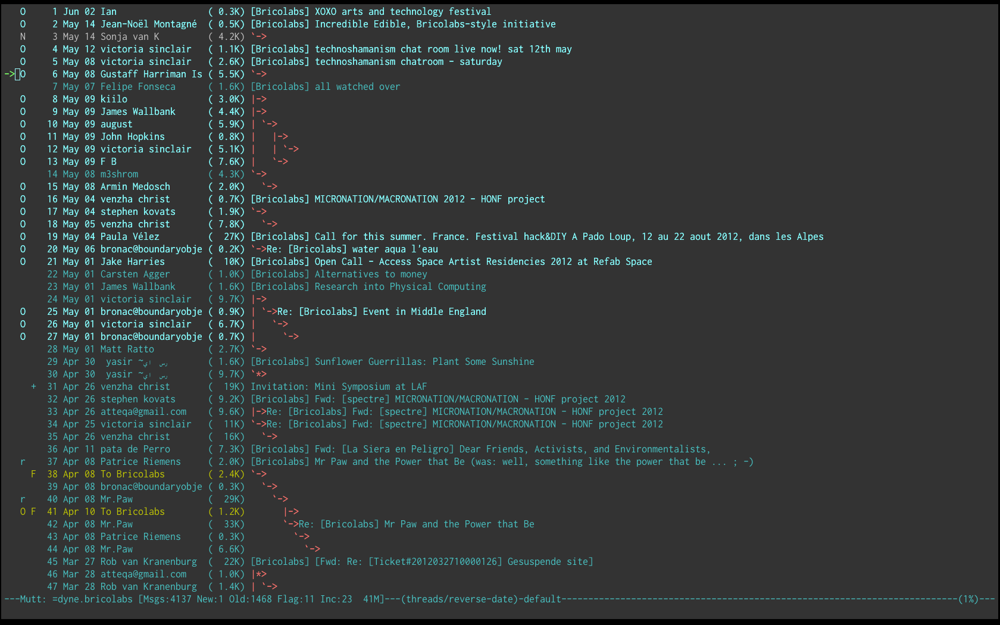

jaromail(1) -- self-sovereign e-mail management
Jaro Mail is an integrated suite of interoperable tools to manage e-mail communication in a private and efficient way, without relying too much on on-line services, in fact encouraging users to store their email locally.
Rather than reinventing the wheel, this suite reuses existing free and open source tools and protocols and is mainly targeted for GNU/Linux/BSD desktop usage.
This manual illustrates the usage of Jaro Mail. The newest version of this manual is made available on http://files.dyne.org/jaromail/jaromail-manual.pdf
Features

- Minimalistic and efficient interface with message threading
- Targets intensive usage of e-mails and mailinglists
- Stores e-mails locally in a reliable format (maildir)
- Integrates whitelisting and blacklisting, local and remote
- Can do search and backup by advanced expressions
- Automatically generates filter rules (sieve)
- Imports and exports VCard contacts to addressbook
- Computes and shows statistics on mail traffic
- Facilitates sending anonymous emails (Mixmaster)
- Encrypted password storage using OS native keyrings
- Advanced maildir tools (merge, backup, address extraction)
- Defers connections for off-line operations
- Checks SSL/TLS certificates when fetching and sending mails
- Supports strong encryption messaging (GnuPG)
- Multi platform: GNU/Linux/BSD, Apple/OSX
- Old school, used by its author for the past 10 years
Vision
The internet offers plenty of free services, on the wave of the Web2.0 fuzz and the community boom, while all private informations are hosted on servers owned by global corporations and monopolies.
It is important to keep in mind that no-one else better than you can ensure the privacy of your personal data. Server hosted services and web integrated technologies gather all data into huge information pools that are made available to established economical and cultural regimes.
The vision behind this software is that of sharing a simple and consistent way to operate e-mail communication with tools that are available on most platforms and can be as well used remotely over a secure shell connection.
Jaro Mail aims to facilitate the task of downloading and storing e-mail archives off-line in a way that they can be still accessible in more than 10 years time and independently of any software. Nowadays many users have the habit of keeping all their e-mails on servers, accessing them through an often clumsy web interface, while downloading them can free space and improve their privacy.
Architecture
JaroMail is a usable terminal interface that easily sets up and integrates the following components to manage large e-mail folders locally:
| Acronym | Function | Software |
|---|---|---|
| MUA | Mail User Agent | Mutt |
| MTA | Mail Transport Agent | Fetchmail |
| LDA | Local Delivery Agent | Mblaze |
| MDA | Remote Delivery Agent | Sieve |
| SMTP | Mail delivery agent | MSmtp |
| ANON | Anonymous delivery | MixMaster |
| SEARCH | Mail Search engine | Notmuch |
| ABOOK | Contacts Addressbook | ABook |
| GPG | Cryptographic Agent | GnuPG |
| STORE | Cryptographic Storage | Tomb |
Setup
Build
Some dependencies are needed in order to build this software. The Makefile for GNU/Linux configures the build environment automatically on Debian and Fedora systems, using their packaging to install all needed packages.
The dependencies to be installed on the system for JaroMail are:
gcc bison flex make autoconf automake sqlite3 libglib2.0-dev libgnome-keyring-dev
Install
To install the following programs need to be installed:
fetchmail msmtp neomutt direnv mblaze pinentry abook wipe notmuch alot
Then make install will put all jaromail files in /usr/local/share/jaromail.
Apple/OSX
Apple/OSX users that have no experience in building software can obtain a pre-built universal binary from our download zone on http://files.dyne.org/jaromail/binary
One can simply drag JaroMail into Applications. When started JaroMail opens a Terminal window preconfigured with its environment, to activate it for any terminal add this to `\~/.profile`:
export PATH=/Applications/JaroMail.app/Contents/Resources/jaro/bin:$PATH
Use
Make a directory where all the emails and settings needs to be, change to the directory and init the environment:
mkdir $HOME/gmail-alternative
cd $HOME/gmail-alternative
jaro init
Every installation of Jaro Mail is fully reentrant, meaning the directory where it gets initialised contains all maildirs, configurations, filters, whitelist, addressbooks and other necessary files.
A single user can have multiple Jaro Mail folders on the same system to permit the complete separation of E-Mail identities.
If called from outside the installation directory, the jaro command will use the environmental variable \$JAROMAILDIR to find out the active installation being in use. If one is using a different installation path then should first change that, i.e:
export JAROMAILDIR=$HOME/OtherIdentities/Luther/Mail
Configuration
The place where Jaro Mail is initialized, its folder contains all configuration files.
From now own, we will call this place the MAILDIR.
Configurations are in readable plain text files that can be edited using any editor. Inside them there are comments to explain the settings: all comment lines start by \'#\' and will be ignored by JaroMail.
The most important files to start configuring are:
Accounts/default.txt: main account configuration (there can be more than one file in theAccounts/folder)Aliases.txt: more email addresses one may receive on the configured accountsFilters.txt: Full set of mailinglist sorting rulesApplications.txt: mime type associations to programs used to open attachmentsMutt.txt: mutt specific custom configurations
Accounts
Inside the Mail directory is found the folder Accounts with brief instructions and default templates to fill with Imap and Smtp account configurations to fetch mail. A default template will be found in fresh installations: Accounts/default.txt. The configuration can be edited with one\'s favourite text editor, the format of the file is pretty self-explanatory.
It is possible to have more than one account (simply as a new file in
the Accounts/ directory) and refer to it using the -a commandline
option. For instance when we configure Accounts/gamer.txt as an
alternative mailbox then we can connect it using jaro peek -a gamer
Config files in Accounts can also contain my_hdr that will
configure custom header lines (for instance GPG-ID or X-Organisation)
that will be added to the mails sent. For more information about the
vast amount of configurations supported please refer to the Mutt
documentation[^1].
Organization
One of the main goals for Jaro Mail is to organize the e-mail workflow so that one\'s attention is dedicated to important communications, rather than being constantly distracted by various degrees of spam and the need to weed it out of the mailbox. This ambitious task is pursued by realizing an integrated approach consisting of flexible whitelisting and the distinction between mails from known people and the rest.
Folders
First lets start with a categorization of the standard maildirs and a brief description for each. This information is very important to understand how Jaro Mail works: these maildirs are standard in Jaro Mail, here they are listed in order of priority
Folder What goes in there
known Mails whose sender is known (Whitelist) priv Unknown sender, we are among explicit recipients unsorted Unknown sender, we are not among recipients zz.blacklist Mails whose sender is not desired (Blacklist) zz.spam Mails that are tagged as spam (server-side) zz.bounces Mail bounces like mailman and similar
The advantage using such a folder organization is that every time we open up the mail reader we will be presented with something we are likely to be most interested in (known people replying our mails) and progressively, as we will have the time to scroll through, mails from \"new people\" or mass mailings of sort.
This setup is handy especially considering it produces sieve filters that can be uploaded to mail servers and processed server-side. Imagine having your email on a fixed computer, but occasionally checking it from a mobile phone: server-side filtering will save you time by presenting a clean INBOX of whitelisted contacts for the mobile phone use.
Please note this organization does not includes spam, which is supposedly weeded out on the server via spamlists: White/Blacklisting has more to do with our own selection of content sources than with the generic protection from random pieces of information.
At last, anything that is matched by filters configured in Filters.txt will be saved into the named maildir, whose name can be freely choosen.
Whitelist
The way whitelisting works if quite crucial to this setup and, at the same time, is fairly simple since it does not include any automatic detection, learning filters, Markov chains or Bayesian A/I. We believe the user should be in full control of prioritizing communication channels and at the same time constantly able to tweak the setup in an easy way.
To whitelist an address is sufficient to send it an e-mail: at the moment the message is sent Jaro Mail will remember the destination address and prioritize all messages coming back from it. This we call implicit whitelisting.
To explicitly whitelist an address from inside the mail reader index press [ a ] while selecting an email, this will add in the whitelist the sender address (From: header). If you want to add all addresses reached by the mail (From: To: and Cc: fields) use the same letter capitalized pressing shift [ A ].
All addresses selected this way will have the privilege of ending up in your known/ folder, plus their name and e-mail will be completed automatically when composing a new email, pressing the Tab key while indicating them among the recipients.
Blacklist
To blacklist an address instead one can use the [ z ] key while an e-mail is selected on the index: the sender indicated in the From: field will be downgraded to the very bottom of your priorities, closes to spam than the rest, the most infamous zz.blacklist/ folder.
Organization In Brief
Below a recapitulation of keys related to the white and blacklisting functionality, to be used in the e-mail index or when an e-mail is open inside the mail user agent:
List Key Function Fields
White a Add the sender address From: White A (shift) Add all addresses From: To: Cc: Black z Blacklist the sender From: Black Z (shift) Blacklist all addresses From: To: Cc:
Workflow
This section goes through a scenario of simple usage for Jaro Mail
Fetch and read your mail at home
As you acces your computer where Jaro Mail has been configured, you can open a Terminal and type:
jaro fetch
This will download all new mails.
If you have configured fetchall among the imap account options, then will delete them from the server, freeing online space.
If you have configured the keep option, which is the default, Jaro Mail will only download the email that you have not yet read and in any case it won\'t delete anything from the server. Remove the keep option to delete on the server all emails that are downloaded.
jaro
This will launch mutt on the first folder containing unread emails, starting from the known folder, then priv, then all the destinations specified by Filters.txt exactly in the ascending order they are listed in that configuration file..
From there on, pressing = or c you can change to other folders and your unsorted mails.
Write a new mail
If you like to write a mail to someone, hit m and write the recipient address, you will be then asked about any additional Cc: recipients.
If you don\'t remember the emails of the recipients, you can just type their name or parts of the email you remember, then press the [ Tab ] key for completion. A list of addresses may popup with matches found in your whitelist addressbook to help remind who are you looking for.
The email is composed using a special Vim configuration that facilitates justifying text to 72 columns using [ ctrl-j ]. After composing the email you will be able to review it and change:
- the From: field using [ ESC f ]
- the recipient in the To: field using [ t ]
- the recipients in the Cc: field using [ c ]
- the subject string using [ s ]
You\'ll also be able to add more attachments by pressing a and use the arrow keys to move over the existing ones and delete them using [ D ] (please note that is a uppercase D, because lowercase d will just add a description for the attachment).
At last, when ready, pressing y will queue the email into the outbox, ready for sending.
One can review at any time the sending queue, which is just another maildir named outbox
jaro outbox
Mails can be deleted from this view using [ d ] or edited using [ e ] which will allow tweaking of both the header and body of the email.
Once sure the outbox contains all what needs to be sent, make sure the computer is connected to the Internet and issue the send command:
jaro send
Jaro Mail will send all emails in outbox, one by one, listing their recipients and size while doing so. If successful, mails will be removed from the outbox and put into the sent folder, which can be accessed from inside mutt or with the command jaro open sent.
Write a new email from the commandline
Jaro Mail supports a lot of commandline operations based on stdin/stdout pipes, which makes it pretty easy to use in scripts that send emails and attachments.
If you have written a plain-text email using your favorite editor, you can send it quickly using the commandline: save the email into a txt file and then pipe it into jaro compose followed by a list of recipients and, optionally a list of filenames to attach. For example:
cat Greetings.txt | jaro compose friends@dyne.org picture01.jpg jingle02.mp3 ~/myicons/*
The command above may send an email with various separate attachments (using MIME encapsulation): a picture, an hopefully small audio file and a list of icons which are all the files contained into the myicons/ directory. In this case the recipient will be friends@dyne.org, but may be any other email address found on the commandline in any position.
Once executed you will find this email in jaro outbox, ready to be reviewed and sent with jaro send.
Reply messages
While browsing through the index of emails in various folders, one can reply any of them just by pressing the [ r ] key, which will ask if the original message should be quoted and then open your favorite editor to compose your text.
If the email you are replying has been sent to multiple recipients (for instance using multiple addresses in the Cc: or From: fields) they will all be included, but you will have the possibility to exclude them by hand, editing the Cc: field. To remove them all at once use [ ctrl-k ] just like deliting a line on the terminal.
It is also possible to forward a message to someone else than the sender, for instance to submit it to his or her attention, or that of a mailinglist. To do that, you can use the [ f ] key which will present you with the full message and the possibility to write something on top of it, to describe its contents to its new recipients. Forwards include all attachments and are sent as attachments themselves, but this behavious can be changed as a confirmation to \"send forward as attach\" is asked.
Peek without downloading anything
If you are around and like to see your new mails without downloading them, then you can use the peek function:
jaro peek
This will open the default configured IMAP account and folder over SSL protocol (securing the data transfer) and allow you to browse, read and reply your emails without downloading them.
Using peek you can reply and even delete emails, but be careful since what you delete here will be removed from the server and won\'t be there when you download it from home.
This functionality can be also very useful if you are from a slow connection and need to delete some email that is clogging it and that you are not able to download because of its size.
The peek command will automatically open the INBOX, but also other remote imap folders can be specified, like for instance priv or unsorted if whitelisting is also setup server-side (the sieve filters generated by Jaro Mail need to be uploaded on the server). To have a list of imap folders on the server a command is also available:
jaro imap listfolders
Will list on the terminal all folders found on the imap account, one per line.
Save important emails for later
Sometimes one can be on the rush while reading emails (local or via imap) and flagging them as important can be useful to keep focus on priorities. In some cases it is very useful to save such important messages locally for later reference, for instance in a folder keeping messages that need to be remembered and that will constitute a kind of TODO list (a\'la GTD).
Jaro Mail implements such functionalities: by pressing the [ F ] key (uppercase) one can flag an email, which will turn bright-green in the index. In addition to that there is a folder called remember/ where one can copy emails on the fly using the [ R ] key (uppercase) any time. Messages will be duplicated into the remember folder (which of course can be opened with the command jaro remember) so they can also be edited with annotations on the task they refer to, for instance using the [ e ] key, without affecting the original message.
Workflow in brief
Below a recapitulation of keys commonly used in our workflow
Key Function
m Compose a new message Tab Complete addresses and folders input r Reply to the sender of a message d Delete a message y Send a message (queue in outbox) f Forward a message to new recipients = List all filtered maildir folders c Change to another folder F Flag a message as important R Copy a message to remember s Move a message to another folder C Copy a message to another folder
Searching
Searching across all your emails it is as important as demanding of a task. Jaro Mail implements it using Notmuch which is relying on the Xapian search engine, completely relying on local computations made on your machine, there is no data at all being communicated on-line.
To index and tag all your emails that are locally archived in Jaro Mail use:
jaro index
This will take a while and increase the size of the storage of about one sixth of its total occupation, but will definitely come useful when in need of searching rapidly across all available emails. To run a search for emails containing the \'open source\' string, do
jaro search open source
To search for all emails containing this string and dated between now and the last two weeks, do
jaro search open source date:2w..
The search command prints out a list of found filenames which may be useful to a script, but less useful to a human. In order to read a quick summary of the emails found it is possible to pipe the results into the headers command which will print out date, sender and subject of each file
jaro search open source date:2w.. | jaro headers
Searching has also an interactive interface called alot which pops up to show search results and browse through them, refine the terms and in general operate on emails with the usual keys. One can also reply to emails directly from alot:
jaro alot search expression strings folder:known
To restrict the search to a single folder, one can use the folder: prefix to search terms. Tags can be used also with tag: as well dates can be specified with ranges using date:. Consecutive string expressions are aloud to refine the search match, connected with logical and/or, plus also the header to search can be indicated, as for instance from: or to:. Read more about this below in the Search term and Date and time search sections (extracts from the notmuch-search-terms manpage) and on the notmuch webpage at http://notmuchmail.org
With the addr command the search will be run on the whitelist addressbook entries instead of actual email contents.
jaro addr joe
Will list all addresses matching the string \'joe\' inside the whitelist addressbook. Also the blacklist can be searched this way adding the switch -l blacklist.
Combining terms
In addition to individual terms, multiple terms can be combined with Boolean operators ( and, or, not , etc.). Each term in the query will be implicitly connected by a logical AND if no explicit operator is provided.
Parentheses can also be used to control the combination of the Boolean operators, but will have to be protected from interpretation by the shell, (such as by putting quotation marks around any parenthesized expression).
Search terms
The search terms can consist of free-form text (and quoted phrases) which will match all messages that contain all of the given terms/phrases in the body, the subject, or any of the sender or recipient headers.
As a special case, a search string consisting of exactly a single asterisk \"*\" will match all messages.
In addition to free text, the following prefixes can be used to force terms to match against specific portions of an email, (where \<brackets> indicate user-supplied values):
from:<name-or-address>
to:<name-or-address>
subject:<word-or-quoted-phrase>
attachment:<word>
tag:<tag> (or is:<tag>)
id:<message-id>
thread:<thread-id>
folder:<directory-path>
date:<since>..<until>
The from: prefix is used to match the name or address of the sender of an email message.
The to: prefix is used to match the names or addresses of any recipient of an email message, (whether To, Cc, or Bcc).
Any term prefixed with subject: will match only text from the subject of an email. Searching for a phrase in the subject is supported by including quotation marks around the phrase, immediately following subject:.
The /
For /
For id:, message ID values are the literal contents of the Message-ID: header of email messages, but without the \'\<\', \'>\' delimiters.
The thread: prefix can be used with the thread ID values that are generated internally by notmuch (and do not appear in email messages). These thread ID values can be seen in the first column of output from notmuch search
The folder: prefix can be used to search for email message files that are contained within particular directories within the mail store. If the same email message has multiple message files associated with it, it\'s sufficient for a match that at least one of the files is contained within a matching directory. Only the directory components below the top-level mail database path are available to be searched.
Date and time search
See DATE AND TIME SEARCH below for details on the range expression, and supported syntax for \<since> and \<until> date and time expressions.
The date: prefix can be used to restrict the results to only messages within a particular time range (based on the Date: header) with a range syntax of:
date:<since>..<until>
The syntax \<initial-timestamp>..\<final-timestamp> can be represented using the number of seconds since 1970-01-01 00:00:00 UTC.
The search syntax also understands a variety of standard and natural ways of expressing dates and times, both in absolute terms \'2012-10-24\' and in relative terms \'yesterday\'. Any number of relative terms can be combined \'1 hour 25 minutes\' and an absolute date/time can be combined with relative terms to further adjust it. A non-exhaustive description of the syntax supported for absolute and relative terms is given below.
The range expression
date:<since>..<until>
The above expression restricts the results to only messages from \<since> to \<until>, based on the Date: header.
\<since> and \<until> can describe imprecise times, such as \"yesterday\". In this case, \<since> is taken as the earliest time it could describe (the beginning of yesterday) and \<until> is taken as the latest time it could describe (the end of yesterday). Similarly, date:january..february matches from the beginning of January to the end of February.
Currently, we do not support spaces in range expressions. You can replace the spaces with \'\_\', or (in most cases) \'-\', or (in some cases) leave the spaces out altogether. Examples in this man page use spaces for clarity.
Open-ended ranges are supported (since Xapian 1.2.1), i.e. it\'s possible to specify date:..\<until> or date:\<since>.. to not limit the start or end time, respectively.
Entering date:expr without \"..\" (for example date:yesterday) won\'t work, as it\'s not interpreted as a range expression at all. You can achieve the expected result by duplicating the expr both sides of \"..\" (for example date:yesterday..yesterday).
Relative date and time
[N|number]
(years|months|weeks|days|hours|hrs|minutes|mins|seconds|secs) [...]
All refer to past, can be repeated and will be accumulated.
Units can be abbreviated to any length, with the otherwise ambiguous single m being m for minutes and M for months.
Number can also be written out one, two, ..., ten, dozen, hundred. Additionally, the unit may be preceded by \"last\" or \"this\" (e.g., \"last week\" or \"this month\").
When combined with absolute date and time, the relative date and time specification will be relative from the specified absolute date and time.
Examples:
5M2d
two weeks
Absolute time formats
H[H]:MM[:SS]
[(am|a.m.|pm|p.m.)]
H[H] (am|a.m.|pm|p.m.)
HHMMSS
now
noon
midnight
Examples:
17:05
5pm
Absolute date formats
YYYY-MM[-DD]
DD-MM[-[YY]YY]
MM-YYYY
M[M]/D[D][/[YY]YY]
M[M]/YYYY
D[D].M[M][.[YY]YY]
D[D][(st|nd|rd|th)] Mon[thname] [YYYY]
Mon[thname] D[D][(st|nd|rd|th)] [YYYY]
Wee[kday]
Month names can be abbreviated at three or more characters.
Weekday names can be abbreviated at three or more characters.
Examples:
2012-07-31
31-07-2012
7/31/2012
August 3
Time zones
(+|-)HH:MM
(+|-)HH[MM]
Some time zone codes.
Examples:
UTC
EET
Compute and visualize statistics
The stats command is useful to quickly visualize statistics regarding folder usage as well the frequency of emails found in a stream from stdin. Such streams can be produced by the search and extract commands for instance and passed to stats in order to have a more graphical (yet ASCII based) visualization of results.
For example lets visualize the frequency of email domain hosts in our whitelist:
jaro addr | jaro stat emails
Will print out bars and domains in descending order, highlighting the most frequent email domain in our contacts, which turns out to be very often gmail.com, unfortunately for our own privacy.
To visualize the frequency of traffic across our filtered folders in the past month:
jaro search date:1w.. | jaro stat folders
Will show quantities of mails filed to folders during the past week, quickly highlighting the mailinglists that have seen more recent activity.
To see who is most active in a mailinglist which is filtered to a folder:
jaro search folder:org.dyne.dng | jaro extract stdin from | jaro stat names
Will give an overview on who is the most prolific writer in the org.dyne.dng mailinglist, filed into the folder by a rule in Filters.txt like:
to dng@lists.dyne save org.dyne.dng
Please note the extract command is there to extract email addresses and names found in the From: field of all search hits, the command is explained better in the next chapter: [Addressbook][]*.
Replay results of expensive operations
Working on the commandline can have some disadvantages. One of them is that if one runs a long operation to see its result and forgets to save it also on a file (i.e. using tee) the operation needs to be re-run and saved.
Jaro Mail helps the user to replay the last output print by saving it everytime in its own cache. Replay can also save per-command outputs so that long pipe chains can be repeated selectively by naming the command. Only some commands have the replay capability, to have a list of available replays on your system do, based on your last run commands:
jaro replay list
To replay the last search command and pipe it into headers to have a better view of it:
jaro replay search | jaro headers
For instance imagine giving the command that searches for all mails sent to nettime-l and extracts all addresses in the From: including duplicates, then sorts them and eliminates duplicates
jaro search to:nettime-l | jaro extract stdin from | sort | uniq
Depending from the size of your nettime archives, this operation may take some time and one may not want to repeat it in order to compute some stats on the extract result. So one can go on and send the old output to a new command:
jaro replay extract | jaro stat names
This will print out statistics about the most prolific write to the nettime list according to your archives.
Statistics in brief
All stats commands takes lists of addresses or email messages from stdin.
command effect
stats email reads addresses from stdin, prints out stats on frequency of emails found stats names reads addresses from stdin, prints out stats on frequency of names found stats folders reads paths to messages from stdin, prints out stats on frequency of folders
So in case of stats email or stats names any result of search must be first filtered by extract in order to provide addresses to stats, else errors will occur. To limit the stats to the From: field use the extract stdin from also shown in examples, any other refinement can be done also in the domain of the search commands.
Addressbook
Addressbooks are the files storing the whitelist, the blacklist and optionally other custom lists of addresses. The format we use is native abook database files, by convention in \$JAROMAILDIR/whitelist.abook and \$JAROMAILDIR/blacklist.abook. More custom addressbooks can be used by specifying them using -l on the commandline, for instance -l family will query the \$JAROMAILDIR/family.abook addressbook; when not used, whitelist is the default.
Addressbooks can be edited using a interactive console interface, for instance to add or delete entries by hand: use the abook command and optionally the -l option.
jaro abook
This will open the current whitelist for edit. To edit the blacklist add -l blacklist instead.
To quickly dump to the console all names and addresses in the Jaro Mail addressbook, one can use the list command
jaro list
To match a string across the addressbook, simply use the composite command addr followed by strings, for instance:
jaro addr dyne
will list all addresses containing \'dyne\' in your whitelist.
Address lists
Jaro Mail handles lists of addresses as plain text files or streams with entries formatted as \'Name \<email>\' and newline terminated. This simple format conforms (or is normalized to) the RFC822 standard and UTF-8 charset encoding, both produced on stdout and read from stdin by various useful commands to take advantage of console piping.
Such lists of addresses are the output of the extract command, which is able to read the output of other commands and extract a list of email addresses found.
jaro search open source date:2w.. | jaro extract stdin
Will print to stdout the list of addresses found among the results of a search for open source through all the emails archived in the past 2 weeks.
jaro search date:1y.. and folder:known | jaro extract
Will print a sorted list of unique addresses found in the emails matching the search expression \'date:1y.. and folder:known\', meaning all messages stored in the \'known\' folder and not older than 1 year from now.
The import command is complementary to extraction: it reads an address list from stdin and imports it inside an addressbook specified using \'-l\' or a group list file provided as argument.
jaro search folder:unsorted | jaro extract | jaro import -l blacklist
Will extract all addresses found in unsorted (the maildir collecting all non-mailinglist emails in which we are not an explicit recipient) and put them into our blacklist.
Export to VCard and other formats
VCard is an exchange format useful to interface with other addressbook software and mobile phones, as well with spyware as Google and Apple mail. Jaro Mail supports converting address lists to a variety of formats thanks to abook:
jaro addr | jaro export vcard
Will take the list of addresses in whitelist and convert it to the vcard format on stdout, ready to be redirected to a file.
Here below a list of output formats supported as argument to export:
Format Description
abook abook native format ldif ldif / Netscape addressbook (.4ld) vcard vCard 2 file mutt mutt alias muttq mutt query format (internal use) html html document pine pine addressbook csv comma separated values allcsv comma separated values (all fields) palmcsv Palm comma separated values elm elm alias text plain text wl Wanderlust address book spruce Spruce address book bsdcal BSD calendar custom Custom format
Of course export works with any list of addresses from stdin, for instance the result of extract operations on search queries, so that multiple commands can be concatenated.
Addressbook in brief
Here a roundup on the addressbook commands that are available from the jaro commandline script. Arguments \'-l abook\' take the string to identify
Command Arguments Function (print on stdout, import from stdin)
abook -l listname edit the addressbook (default whitelist) addr search expr print list of addresses matching expression extract maildir print address list of all mails in maildir extract gpg keyring print address list of gpg public keyring extract gpg pubkey print address list of gpg key signatures extract vcard file print address list of entries in VCard file import -l listname import address list from stdin to addressbook export format convert address list to a format (default vcard)
Filters
In the mail directory a file named Filters.txt is filled in with
filtering rules referencing the contents of the From: or To:
fields.
The format of the filters configurarion is pretty easy and self
explanatory, just have a look at this file and when something changes
update the filter engine using jaro update.
Then use jaro filter any-maildir/ and the mails contained in
any-maildir will be moved according to the updated filter rules.
Beware that filtering is a lengthy operation, especially on big maildirs.
Merge maildirs
Mblaze can safely move all e-mails stored in one maildir to another.
mlist latest-mails | mrefile global-archive
The above command will move all emails stored inside the maildir folder
latest-mails to the other maildir folder global-archive.
Backup mails
Backup strategies can be easily managed: just move all emails older than a certain period from one maildir to another.
Using jaromail search function with date we obtain a list of matches
and process them using mblaze's mrefile command:
For instance to move all archived mails older than 3 years into a separate folder:
jaro search date:3y.. | mrefile /media/backup/old-mails
This will move into the maildir /media/backup/old.mails all the
emails older than 3 years that are found in any folder.
One can also use jaro link to create symlinks into a new maildir:
to review results without increasing filesystem occupation, then open
the destination maildir normally using neomutt -r -f destination/
Security
We love to keep our own email private, this is how jaromail does it.
Password storage
Our MUA (Mutt), MTA (Fetchmail) and SMTP (msmtp) require the user to input account passwords every time they run, jeopardizing their secrecy.
Jaromail saves and provides passwords to these components without
saving them on the filesystem in clear: they are stored securely
through password-store (also known
as pass, the standard UNIX password manager). We save All passwords
in the $HOME/.password-store GPG encrypted database under the
email/ path followed by the main account email.
Secure storage
Jaromail is fully compatible with Tomb, the Crypto Undertaker ^4 another Dyne.org softwareto manage encrypted volumes.
Using a light combination of scripts between Jaromail and Tomb is possible to achieve a strong level of personal security, definitely above the average.
In particular, Jaro Mail does not needs system-wide installation, but can be installed and used in a way that makes it totally self-contained and transportable across systems inside a Tomb.
Anonymous emails
To send an anonymous email just change the From: header field to
anon@mixmaster. Our application will recognize that as a request
to send the email across the MixMaster anonymous network.
To change From: in Mutt: after composition, when headers and
attachments are shown, press ESC and then f, then type the
special sender address anon@mixmaster and press [Enter].
Shell environment
Zsh commandline completion
For Zsh users out there there is a completion recipe that can facilitate the use of Jaro Mail by adding tab completion on the console terminal: commands and accounts will be listed and completed automatically just like with other commands.
To activate the completion move the file src/completion/_jaromail into the path where zsh loads vendor completions, typically that is /usr/share/zsh/vendor-completions.
Quickly send a file via email on Apple/OSX
To right-click on a file and send it via email attach using Jaro Mail you must create a \"Service\" using the application \"Automator\". It is fairly simple:
- Start Automator
- Choose the Service template
- In the dropdown boxes that appear choose \"files or folders\" and \"Finder\"
- Look for \"Run Applescript\" in the Library tree
- Drag \"Run Applescript\" in the workflow area and paste this script into it:
on run {input, parameters}
tell application "Terminal"
activate
tell window 1
do script "/Applications/JaroMail.app/Contents/Resources/jaro/bin/jaro " & POSIX path of input
end tell
end tell
end run
Now Save the new service (you can name it \"Send file via Jaro Mail\") and when you will right click on a file, in the submenu \"Services\" you will find the option you just scripted, which will open a Terminal asking you the email address, while the file will be already configured as attach.
License
The following copyright notice applies to this manual, the software included is licensed under the same or different GNU GPL or BSD licenses, or available in the public domain.
Copyleft (C) 2010-2023 Denis Roio <jaromil@dyne.org>
Permission is granted to copy, distribute and/or modify this document
under the terms of the GNU Free Documentation License, Version 1.3 or
any later version published by the Free Software Foundation;
Permission is granted to make and distribute verbatim copies of this
manual page provided the above copyright notice and this permission
notice are preserved on all copies.
[^1]: The Mutt configuration manual is found on http://www.mutt.org/doc/manual or simply typing \'man mutt\' in a console terminal.
What this virtuous, sometimes very cryptical man is trying to say
here is that the Maildir format in its simplicity of implementation
represents an extremely reliable way to retreive and store emails
without the risk of losing any if the Internet connection goes down.
While skipping over the internal details of this storage system,
which basically consists in plain text files saved into
sub-directories, we will have a look at some very interesting
features that Jaro Mail can offer to its users and to the even
larger audience of Maildir format users.
[^3]: The keyring is encrypted using weak symmetric encryption via GnuPG, the only protection for the data inside then is the password memorized by the used.
To explicitly change a password one can operate the default keyring
manager or use the command **jaro passwd** (and specify other
acconts using **-a accountname**)) which will prompt to set for a
new password even if an old one is known.